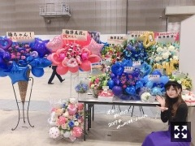
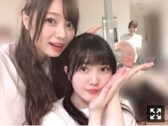

早いのかゆっくりなのか
みなさまこんにちは！！
乃木坂46の
梅澤美波です！
猫舌showroomに
出させていただいた時のです〜
結構経ってしまいましたが、、( .. )
あやちゃんと2人でした！！
楽しかった〜とても！
今年の干支にちなんで
紙粘土でイノシシを作ったのですが
なんせ小学生ぶりくらいに紙粘土触り
あの頃は先生によく褒められてたので
上手くできるかと思いきや
あまりの出来なさに自分で驚きました、、（笑）
学生に戻った気分でとても楽しかった〜
完成品はTwitterの方に載っているみたいです！
遡って探してみてください〜
あやが上手すぎて！！
本当に凄かった！驚いちゃいました！
さてさて
こちらも時間が経ってしまいましたが
２０日、東京ビッグサイトでの個別握手会
お越しくださった皆様、
ありがとうございました！！
この日は成人セレモニーも
開いていただきました！
２部後には
飛鳥さん、純奈さん、琴子さん、絢音さん
４部後には
まあやさん、蘭世さん、梅澤でした！
たくさんの方にお祝いしていただき
とても嬉しかったです(；；)

お花たち、、！
色鮮やかでとっても素敵ですっ
ここくるといつも
お花の匂いがするんだ〜幸せです。
頂いたお花を何本か頂いて
部屋の花瓶に飾っているんです。
本当にいつもありがとうございます！！
一緒にいただくメッセージも
いつも嬉しくて写真に残します。
お次の握手会は
今週日曜日！こちらもビッグサイト！
お待ちしています！
昨日！台北から帰ってきました！
とても楽しかったです！
空港から暖かく迎えて下さり、、
私達から会いに行けたこと、
とても嬉しく思います。
オリジナルのフォーメーションで
披露することが多くて、
久しぶりに披露する曲、大好きな曲、
初めてパフォーマンスに参加させて頂く曲、、
色んな楽曲に参加できて、
楽しんでパフォーマンスすることが出来ました！
距離が遠くて中々頻繁にお会いすることは
出来ないかもしれないけど、
だからこそ、その少しの時間で
たくさんの感謝を届けたいと思うし
日頃頑張れるパワーを
届けられたらなと思います！
握手会に来て下さる
現地のファンの方を見つけたり
日本から駆けつけてくださった
ファンの方もたくさん見つけました！
タオルやボード、うちわ
サイリウム、声援、
とても力になりました。
本当にありがとうございます！

久保とパシャリ。していたら
鏡越しから松村さんが
ひょっこりしてくれました(；；)♡♡
テレビや雑誌、メディアなどから
いろんな方に姿をお見せできるよう
また会いに行ける日まで
私も日本で頑張ります！
また、必ず会いに行きます！
そして今日は朝から撮影でした！
とても楽しかった〜
早く告知できるといいなっ
今日は風が強くとても寒くて
明日もかなり冷え込むようなので
皆様風邪にはお気をつけてくださいね！
染めても染めても
すぐ落ちてしまう髪色、、
困ってしまいますね〜〜
それではおやすみなさい
また更新します
ちょっぴり遠くへお出かけしたい気分です、
京都あたりにまったり行きたいな〜
オススメの場所はありますか？
Original：https://www.nogizaka46.com/s/n46/diary/detail/49052?ima=4946&cd=MEMBER